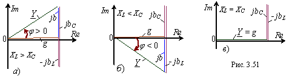

Анализ выражений (2.76) показывает, что характер входной проводимости, следовательно, и характер входного сопротивления параллельной RLC-цепи зависят от соотношения между ёмкостной bC = jωC и индуктивной bL = -1/(jωL) проводимостями:
- если bC > |bL|(рис. 2.51, a) - то входная проводимость носит активно-ёмкостный характер и вектор тока I опережает вектор напряжения U по фазе на угол φ;
- если bC < |bL| (рис. 2.51, б), то входная проводимость носит активно-индуктивный характер и вектор тока I отстаёт от вектора напряжения U по фазе на угол φ;
- при bC = |bL| (рис. 2.51, в) реактивные проводимости взаимно компенсируются и входная проводимость имеет чисто активный характер.
- если bC > |bL|(рис. 2.51, a) - то входная проводимость носит активно-ёмкостный характер и вектор тока I опережает вектор напряжения U по фазе на угол φ;
- если bC < |bL| (рис. 2.51, б), то входная проводимость носит активно-индуктивный характер и вектор тока I отстаёт от вектора напряжения U по фазе на угол φ;
- при bC = |bL| (рис. 2.51, в) реактивные проводимости взаимно компенсируются и входная проводимость имеет чисто активный характер.